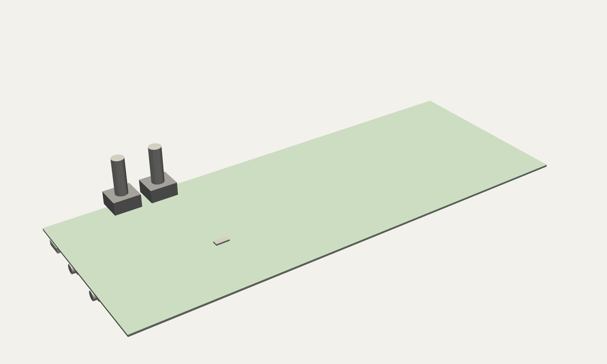
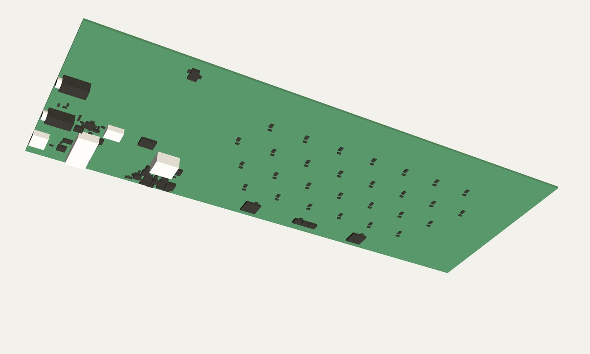

1A placa e os encoders
Receba a placa da JLCPCB e confira a olho nu, com a lupa: os dois jacks e o USB-C devem estar na borda esquerda, ao fundo; o conector M.2 (J101), o JST SH da tela (J401) e o JST PH da bateria (J202) estão no fundo. Todas as peças estão do lado de baixo; do lado de cima só há as ilhas dos encoders, os pads dos fios do alto-falante (J501) e os furos.
Os 5 pinos de cada encoder (3 do giro, 2 do clique) e as duas abas de fixação passam pela placa de cima para baixo. Encaixe-os até o corpo encostar na placa e solde por baixo: as pernas ficam 3,5 mm abaixo da placa. Alinhe pelo corpo, não pelo eixo: o eixo termina a ~24,5 mm da placa e o chato do eixo deve ficar do lado de dentro do furo em D do knob (passo 10).
Não precisa cortar as pernas: a bandeja tem 4,4 mm de folga sob os encoders.
- Solde só as pernas dos encoders; nada mais do topo precisa de solda neste passo.
- Gire o eixo à mão depois de soldar: deve girar em detentes e clicar ao apertar.
Verifique: Encoders retos, corpo rente à placa, eixo girando em detentes e com clique.

